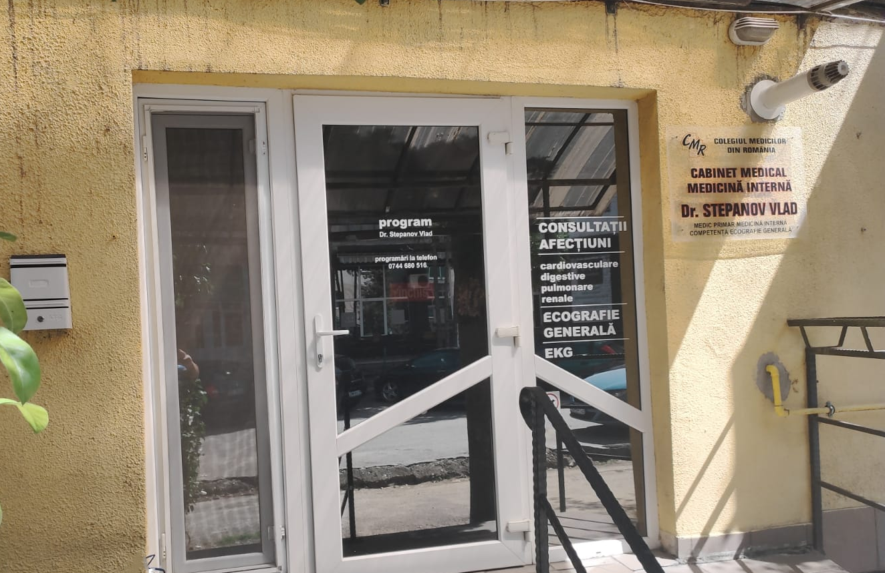

Cabinet medical medicină internă
Dr. Stepanov Vlad
Servicii:
-Consultații afecțiuni:
-cardiovasculare
-digestive
-pulmonare
-renale
-EKG
-Ecografie generală
-Consiliere regim igieno-dietetic
-Evaluare pentru comisie de expertiză medicală
Adresa : Dumbrava 45,bloc D.20,apartament 1
Programări telefon : 0744680516
